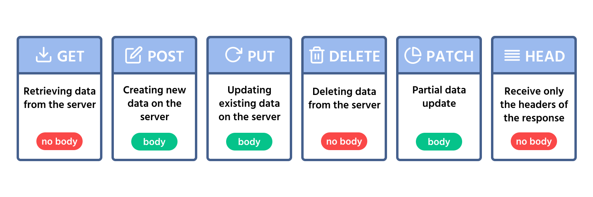

Paso 2: El Navegador realiza una Petición
Con la IP obtenida, el navegador construye una Petición HTTP. Este mensaje se transporta por la red portando las instrucciones exactas para solicitar o modificar recursos en el servidor.

Métodos Principales: GET y POST
| Método | Descripción | Cuándo se usa |
|---|---|---|
| GET | Solicita datos de un recurso específico. | Al cargar una página o buscar en Google. |
| POST | Envía datos para ser procesados al servidor. | Al enviar un formulario de registro o login. |
Recursos Útiles
- Para saber más, visita la Documentación Oficial de MDN sobre Métodos HTTP.